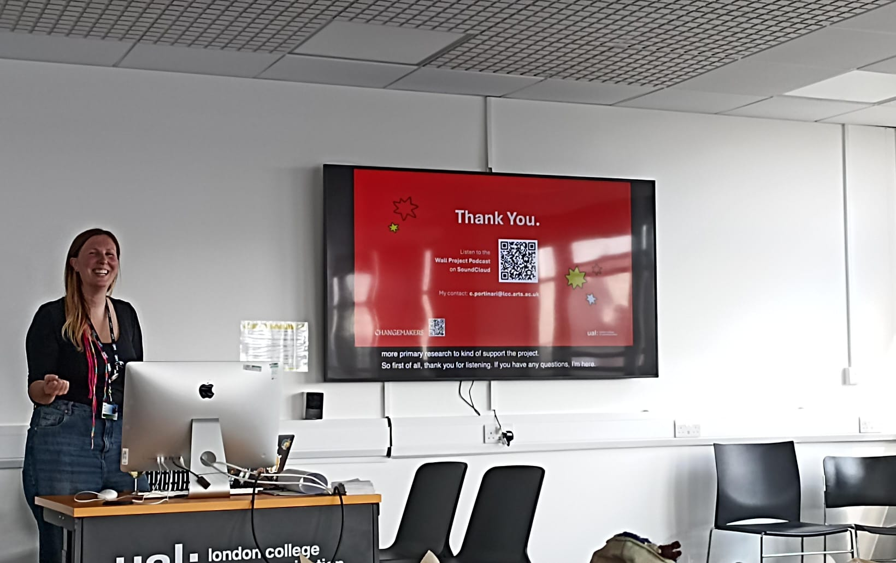
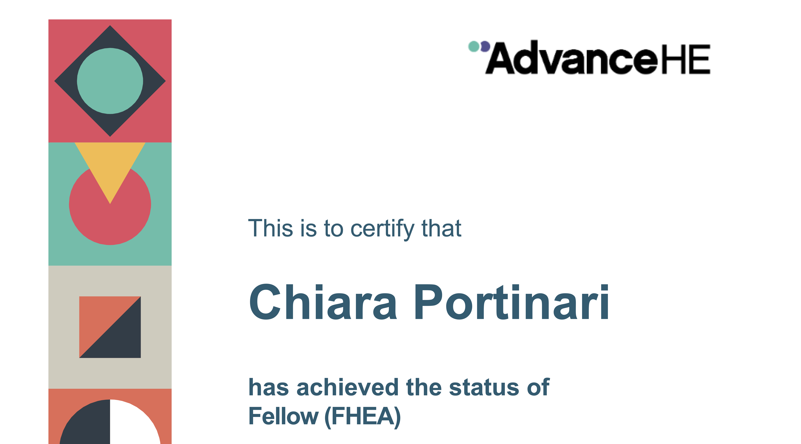

Chiara speaking in a classroom at the London College of Communication.
Chiara's consultancy practice supports institutions and educators in rethinking learning environments through co-creation, critical pedagogy, and experiential methods. They are particularly interested in dismantling traditional power dynamics between students and staff, encouraging shared ownership of learning, and embedding intersectionality within curricula, assessment and institutional practices.

Chiara is a Fellow of the Higher Education Academy, recognised for their commitment to inclusive and innovative teaching in higher education.
Their consultancy focuses on inclusive, equity-driven education and has included:
- Advising on industry engagement with the Knowledge Exchange and Employability department of London College of Communication (LCC) - UAL, helping redesign company visits into participatory, inclusive experiences for all students.
- Leading the Evaluation and Impact Project for the LCC Changemakers, co-developing a flexible framework to assess social justice initiatives using tools like body mapping and journey mapping.
-
Designing transformative learning experiences for LCC, including:
- Collective feedback
- Student-led community archives
- Public-facing learning spaces
- Voluntary student engagements linked to unit content
- Conducting personal evaluation of workshops and classes to continuously improve facilitation practices and learner engagement and inclusion.
Chiara's work supports institutions and individuals in making education more inclusive, dialogic, and impactful.
“Chiara not only offered thoughtful insights but presented them in a way that was both generous and constructive. I’m deeply grateful for her evaluation, which has played a meaningful role in shaping how I’ve developed my teaching practice since.”